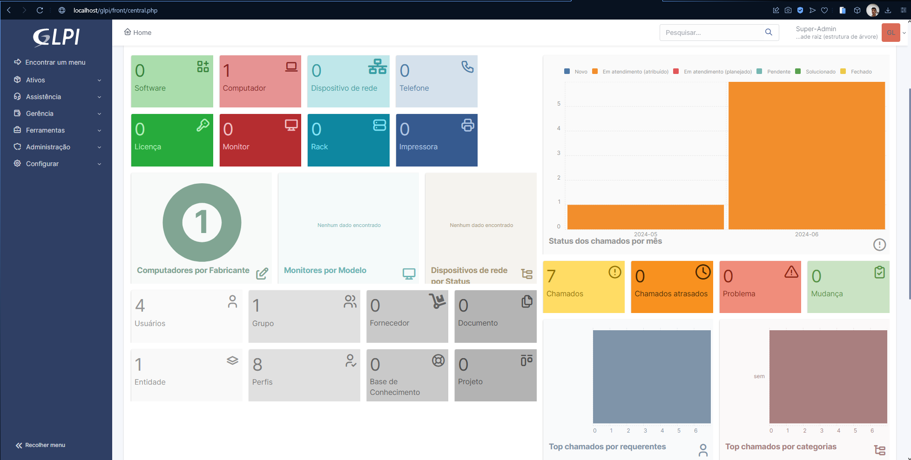
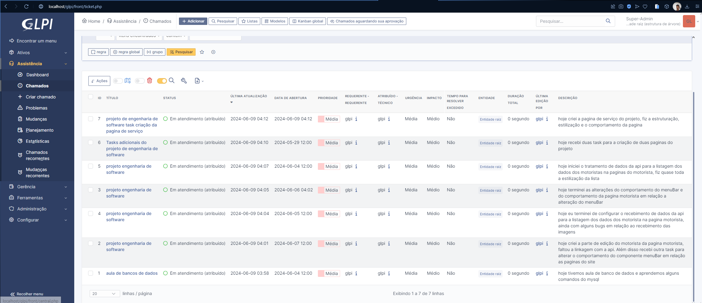

Introdução ao GLPI
O GLPI (Gestionnaire Libre de Parc Informatique) é um sistema poderoso de gerenciamento de TI que permite adicionar ativos, gerenciar chamados, criar usuários, entre outras funcionalidades essenciais para a administração eficiente de um ambiente de TI. Este guia detalha o processo de instalação do GLPI, destacando três métodos básicos: XAMPP, WSL e VirtualBox. Vamos nos concentrar na instalação utilizando o XAMPP.
Instalação do GLPI
Métodos de Instalação
- XAMPP: Uma distribuição fácil de instalar que inclui Apache, PHP, MySQL e Perl.
- WSL: Subsistema Windows para Linux.
- VirtualBox: Uma VM que representa um computador físico.
Meu Processo de Instalação e Configuração
-
Primeiro Passo: Instalar o XAMPP
- Optei pelo XAMPP para ver como ele executaria o GLPI. Baixe e instale o XAMPP do site oficial. Escolhi a versão para Windows:
Versão Soma de verificação Tamanho 8.0.30 PHP 8.0.30 md5 sha1 144 MB
Depois de instalar o XAMPP, baixe a versão mais recente do GLPI, que atualmente é a 10.0.15. Agora, temos tudo o que precisamos para começar.
-
Segundo Passo: Configurar o GLPI
- Extraia a pasta do GLPI e mova-a para a pasta htdocs dentro do diretório do XAMPP. Isso permitirá que o XAMPP utilize as funcionalidades do GLPI.
-
Terceiro Passo: Resolver Problemas de Porta
-
Se o MySQL do XAMPP estiver em conflito com outro serviço usando a porta 3306, será necessário mudar a porta para 3307:
-
No XAMPP Control Panel, vá em Config no módulo MySQL e edite o arquivo my.ini. Altere todas as ocorrências de 3306 para 3307.
- Faça o mesmo no arquivo php.ini no módulo Apache.
- Reinicie os serviços para aplicar as mudanças.
- Quarto Passo: Iniciar o GLPI
-
Inicie os módulos Apache e MySQL no XAMPP e abra o navegador com a URL http://localhost/glpi. A partir daqui, siga as instruções de configuração do GLPI:
- Idioma: Escolha o idioma de sua preferência.
- Licença: Aceite os termos de licença.
- Instalação: Escolha a opção de instalação.
- Quinto Passo: Verificar Dependências
- Se faltar alguma dependência como gd e intl, descomente essas extensões no arquivo php.ini e reinicie os serviços.
-
-
Sexto Passo: Configurar Banco de Dados
-
Configure a conexão com o banco de dados:
- Endereço do servidor Usuário SQL Senha
- localhost root (deixe em branco)
- Sétimo a Décimo Passo: Finalizar Configuração
- Crie um banco de dados.
- Autorize a criação do banco de dados.
- Coleta de dados.
- Use o GLPI.
- Acesso ao Sistema
- Utilize as credenciais abaixo para entrar como administrador:
Nome de usuário Senha glpi glpi Após completar esses passos, seu sistema GLPI estará pronto para uso.
-
-
Conclusão
Seguindo este guia, você poderá instalar e configurar o GLPI usando o XAMPP. Com isso, terá um sistema robusto para gerenciar os ativos e serviços de TI de forma eficiente.
Resultado
Home

Chamados
